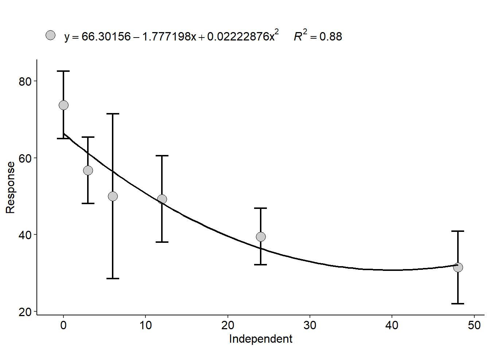
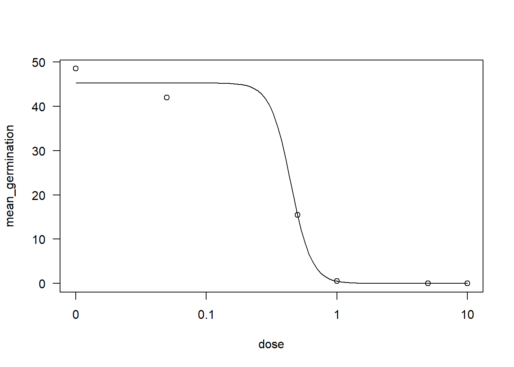

library(gsheet)
library(tidyverse)
library(patchwork)
library(AgroR)
library(corrplot)
library(drc)
library(dplyr)
library(ec50estimator)AULA 10 - 29/05/24
Correlação: associação entre as variáveis, que pode ser forte ou fraca.
O incremento de uma variável e outra pode ser positiva ou negativa. A força da associação está em função da dispersão dos dados. Quanto menos dispersos os dados no gráfico, mais forte é a associação. O coeficiente de correlação de Pearson é um valor entre -1 e 1.
Teste de significância do P-valor.
Na correlação existe uma relação entre causa e efeito.
Correlações espúrias: não existe relação de causa e efeito.
o R² (é o quanto da variação de Y é explicada pelo X) é sempre menor que o R (É a força da correlação entre X e Y).
Pacotes
Dados
Foram obtidos de culturas diferentes para diferentes softwares. A intenção é saber se existe correlação entre eles.
dados <- gsheet2tbl("https://docs.google.com/spreadsheets/d/1bq2N19DcZdtax2fQW9OHSGMR0X2__Z9T/edit#gid=373270992")Gráficos
Análise preeliminar dos dados.
Eixo X: Assess (que é o ponto de referência), Eixo Y: os outros dois softwares.
plot1 <- dados |>
ggplot(aes(x = Assess, y = LeafDoctor))+
geom_point()+
theme_classic()+
geom_smooth(method = "lm")
plot1`geom_smooth()` using formula = 'y ~ x'
plot2 <- dados |>
ggplot(aes(x = Assess, y = ImageJ))+
geom_point()+
theme_classic()+
geom_smooth(method = "lm")
plot2`geom_smooth()` using formula = 'y ~ x'
#plot3 <- dados |>
#ggplot(aes(x = LeafDoctor, y = ImageJ))+
#geom_point()+
#theme_classic()+
#geom_smooth(method = "lm")
#plot3
plot1 + plot2 #+ plot3`geom_smooth()` using formula = 'y ~ x'
`geom_smooth()` using formula = 'y ~ x'
Em uma análise exploratória, observa-se que ambas apresentam correção positiva. Entretanto, a correlação entre Assess e ImageJ é mais forte.
Utilizando o AgroR
Quanto maior a correlação, menor o P-valor. QUanto mais próxima de 0, não há associação entre os dados.
imgs <- dados |>
dplyr::select(3:5)
corgraph(imgs) Var1 Var2 cor p
2 LeafDoctor Assess 0.9666367 5.972544e-42
3 ImageJ Assess 0.9776918 8.143613e-48
6 ImageJ LeafDoctor 0.9797478 3.144091e-49
# O corgraph é uma matriz de correlação que pode ser usada até em um artigo para demonstrar a correlação entre os dados.O gráfic nos mostra que pode-se usar outro programa (em relação ao Assess), pois mostra que existe uma correlação muito boa entre os programas, ou seja, são confiáveis.
cor.test(imgs$Assess, imgs$LeafDoctor)
Pearson's product-moment correlation
data: imgs$Assess and imgs$LeafDoctor
t = 31.119, df = 68, p-value < 2.2e-16
alternative hypothesis: true correlation is not equal to 0
95 percent confidence interval:
0.9466882 0.9792005
sample estimates:
cor
0.9666367 cor.test(imgs$Assess, imgs$ImageJ)
Pearson's product-moment correlation
data: imgs$Assess and imgs$ImageJ
t = 38.383, df = 68, p-value < 2.2e-16
alternative hypothesis: true correlation is not equal to 0
95 percent confidence interval:
0.9642331 0.9861219
sample estimates:
cor
0.9776918 Usando Corrplot
cor_img <- cor(imgs)
corrplot(cor_img, method = 'number', type = 'upper', diag = FALSE)
cor_img2 <- cor(imgs)
corrplot(cor_img, method = "square", type = "lower")
Outro conjunto de dados
Usando agora o conjunto de dados Campo.
campo <- gsheet2tbl("https://docs.google.com/spreadsheets/d/1bq2N19DcZdtax2fQW9OHSGMR0X2__Z9T/edit#gid=866852711")
campo2 <- campo |>
dplyr::select(DFC, FER, PROD)
corgraph(campo2) Var1 Var2 cor p
2 FER DFC 0.9316978 9.864101e-15
3 PROD DFC -0.6928161 1.110652e-05
6 PROD FER -0.6258321 1.277444e-04
cor.test(campo2$PROD, campo2$DFC)
Pearson's product-moment correlation
data: campo2$PROD and campo2$DFC
t = -5.2623, df = 30, p-value = 1.111e-05
alternative hypothesis: true correlation is not equal to 0
95 percent confidence interval:
-0.8388581 -0.4537361
sample estimates:
cor
-0.6928161 cor.test(campo2$PROD, campo2$FER)
Pearson's product-moment correlation
data: campo2$PROD and campo2$FER
t = -4.3949, df = 30, p-value = 0.0001277
alternative hypothesis: true correlation is not equal to 0
95 percent confidence interval:
-0.7999565 -0.3544981
sample estimates:
cor
-0.6258321 campo |>
ggplot(aes(DFC, PROD))+
geom_jitter()
Conjunto Estande
Testar o modelo quadrático - é um modelo linear de segunda ordem. Ajustando ao modelo nos dados do tratamento.
estande <- gsheet2tbl("https://docs.google.com/spreadsheets/d/1bq2N19DcZdtax2fQW9OHSGMR0X2__Z9T/edit#gid=401662555")estande |>
filter(exp == 2) |>
ggplot(aes(trat, nplants))+
geom_point()+
ylim(0, 100)+
geom_smooth(method = "lm",
se = FALSE,
formula = y ~poly(x,2),
color = "black")+
geom_smooth(method = "lm", se = FALSE)+
theme_classic()`geom_smooth()` using formula = 'y ~ x'A equação da curva preta seria: Y = 66,3 - 1,77 x trat + 0,02 x trat².
Essa equação é encontrada nos valores do summary(lm3). Intercept, trat, e trat2.
exp2 <- estande |>
filter(exp == 2)
lm2 <- lm(nplants ~trat, data = exp2)
summary(lm2)
Call:
lm(formula = nplants ~ trat, data = exp2)
Residuals:
Min 1Q Median 3Q Max
-25.7816 -7.7150 0.5653 8.1929 19.2184
Coefficients:
Estimate Std. Error t value Pr(>|t|)
(Intercept) 60.9857 3.6304 16.798 4.93e-14 ***
trat -0.7007 0.1605 -4.365 0.000247 ***
---
Signif. codes: 0 '***' 0.001 '**' 0.01 '*' 0.05 '.' 0.1 ' ' 1
Residual standard error: 12.95 on 22 degrees of freedom
Multiple R-squared: 0.4641, Adjusted R-squared: 0.4398
F-statistic: 19.05 on 1 and 22 DF, p-value: 0.0002473hist(residuals(lm2))
exp2$trat2 <- exp2$trat^2
lm3 <-lm(nplants ~trat + trat2,
data = exp2)
summary(lm2)
Call:
lm(formula = nplants ~ trat, data = exp2)
Residuals:
Min 1Q Median 3Q Max
-25.7816 -7.7150 0.5653 8.1929 19.2184
Coefficients:
Estimate Std. Error t value Pr(>|t|)
(Intercept) 60.9857 3.6304 16.798 4.93e-14 ***
trat -0.7007 0.1605 -4.365 0.000247 ***
---
Signif. codes: 0 '***' 0.001 '**' 0.01 '*' 0.05 '.' 0.1 ' ' 1
Residual standard error: 12.95 on 22 degrees of freedom
Multiple R-squared: 0.4641, Adjusted R-squared: 0.4398
F-statistic: 19.05 on 1 and 22 DF, p-value: 0.0002473summary(lm3)
Call:
lm(formula = nplants ~ trat + trat2, data = exp2)
Residuals:
Min 1Q Median 3Q Max
-25.439 -6.019 1.789 8.016 19.561
Coefficients:
Estimate Std. Error t value Pr(>|t|)
(Intercept) 66.30156 4.42097 14.997 1.08e-12 ***
trat -1.77720 0.58467 -3.040 0.00623 **
trat2 0.02223 0.01166 1.906 0.07036 .
---
Signif. codes: 0 '***' 0.001 '**' 0.01 '*' 0.05 '.' 0.1 ' ' 1
Residual standard error: 12.24 on 21 degrees of freedom
Multiple R-squared: 0.5432, Adjusted R-squared: 0.4997
F-statistic: 12.49 on 2 and 21 DF, p-value: 0.0002675AIC(lm2) [1] 194.9597AIC(lm3)[1] 193.1284hist(residuals(lm3))
# modelo de primeira ordemFazendo o mesmo no AgroR
É observado que o R² vai melhorando conforme o aumento do grau. Entretanto, não podemos aceitar no grau 3 pois o estande não aumenta a concentração de inóculo. O melhor é o grau 2, neste caso.
with(exp2, polynomial(trat, nplants, grau = 1))
----------------------------------------------------
Regression Models
----------------------------------------------------
Estimate Std. Error t value Pr(>|t|)
(Intercept) 60.9857143 3.6304377 16.798447 4.929311e-14
trat -0.7006912 0.1605226 -4.365063 2.473272e-04
----------------------------------------------------
Deviations from regression
----------------------------------------------------
Df SSq MSQ F p-value
Linear 1 3196.203 3196.2031 21.82329 0.0001899378
Deviation 4 1054.172 263.5430 1.79944 0.1729687460
Residual 18 2636.250 146.4583 [[1]]
with(exp2, polynomial(trat, nplants, grau = 2))
----------------------------------------------------
Regression Models
----------------------------------------------------
Estimate Std. Error t value Pr(>|t|)
(Intercept) 66.30156250 4.42096799 14.997069 1.079972e-12
trat -1.77719814 0.58467380 -3.039640 6.230050e-03
I(trat^2) 0.02222876 0.01165948 1.906496 7.036247e-02
----------------------------------------------------
Deviations from regression
----------------------------------------------------
Df SSq MSQ F p-value
Linear 1 3196.2031 3196.2031 21.823293 0.0001899378
Quadratic 1 544.5029 544.5029 3.717801 0.0697619482
Deviation 3 509.6690 169.8897 1.159986 0.3523240106
Residual 18 2636.2500 146.4583 [[1]]
with(exp2, polynomial(trat, nplants, grau = 3))
----------------------------------------------------
Regression Models
----------------------------------------------------
Estimate Std. Error t value Pr(>|t|)
(Intercept) 70.265143802 5.300440019 13.256474 2.295186e-11
trat -3.609380523 1.514625525 -2.383018 2.720299e-02
I(trat^2) 0.140522077 0.091192577 1.540938 1.390058e-01
I(trat^3) -0.001712445 0.001309648 -1.307561 2.058546e-01
----------------------------------------------------
Deviations from regression
----------------------------------------------------
Df SSq MSQ F p-value
Linear 1 3196.2031 3196.2031 21.8232929 0.0001899378
Quadratic 1 544.5029 544.5029 3.7178008 0.0697619482
Cubic 1 247.7520 247.7520 1.6916208 0.2097934169
Deviation 2 261.9170 130.9585 0.8941691 0.4263523326
Residual 18 2636.2500 146.4583 [[1]]
Conjunto de dados - Sensibilidade de fungicidas
sens <- gsheet2tbl("https://docs.google.com/spreadsheets/d/1bq2N19DcZdtax2fQW9OHSGMR0X2__Z9T/edit#gid=465348652")
#Agrupar e sumarizar (médias) dos dois tratamentos para observar os dois isolados.
sens2 <- sens |>
group_by(code, dose) |>
summarise(mean_germination = mean(germination))`summarise()` has grouped output by 'code'. You can override using the
`.groups` argument.sens2 |>
mutate(dose2=dose)# A tibble: 120 × 4
# Groups: code [20]
code dose mean_germination dose2
<chr> <dbl> <dbl> <dbl>
1 152 0 48.5 0
2 152 0.05 42 0.05
3 152 0.5 15.5 0.5
4 152 1 0.5 1
5 152 5 0 5
6 152 10 0 10
7 153 0 49.5 0
8 153 0.05 44.5 0.05
9 153 0.5 9 0.5
10 153 1 8.5 1
# ℹ 110 more rows#sens2$dose2 <- as.factor(sens2$dose2)
#sens2
germ <- sens2 |>
ggplot(aes(dose, mean_germination))+
geom_point()+
facet_wrap(~code)+
geom_smooth(method = "lm",
se = FALSE,
formula = y ~poly(x,2),
color = "blue")
germisolado152 <- sens2 |>
filter(code == "152")
drc1 <- drm(mean_germination ~ dose, data = isolado152,
fct = LL.3())
AIC(drc1)[1] 32.57898plot(drc1)
ED(drc1, 50, interval = "delta")
Estimated effective doses
Estimate Std. Error Lower Upper
e:1:50 0.444356 0.077789 0.196796 0.691916summary(drc1)
Model fitted: Log-logistic (ED50 as parameter) with lower limit at 0 (3 parms)
Parameter estimates:
Estimate Std. Error t-value p-value
b:(Intercept) 5.526512 7.765348 0.7117 0.5280076
d:(Intercept) 45.250173 1.876343 24.1162 0.0001563 ***
e:(Intercept) 0.444356 0.077789 5.7123 0.0106434 *
---
Signif. codes: 0 '***' 0.001 '**' 0.01 '*' 0.05 '.' 0.1 ' ' 1
Residual standard error:
2.65351 (3 degrees of freedom)Usando o pacote ec50estimator
Faz tudo isso que foi feito anteriormente para todos os códigos.
df_ec50 <- estimate_EC50(mean_germination ~ dose,
data = sens2,
isolate_col = "code",
interval = "delta",
fct = drc :: LL.3())
df_ec50 ID strata Estimate Std..Error Lower Upper
1 152 0.44435629 0.077789240 0.196796213 0.6919164
2 153 0.20379664 0.042373512 0.068945217 0.3386481
3 164 0.50775844 0.047248266 0.357393370 0.6581235
4 165 0.55839613 0.114195113 0.194976315 0.9218159
5 169 0.14722311 0.009555688 0.116812646 0.1776336
6 170 0.37503889 0.043207328 0.237533889 0.5125439
7 186 0.57975744 0.013332268 0.537328208 0.6221867
8 187 0.21563338 0.036639446 0.099030315 0.3322365
9 188 0.15297172 0.004284691 0.139335920 0.1666075
10 189 0.53106193 0.023130936 0.457448972 0.6046749
11 FGT05 0.04483862 0.019290890 -0.016553601 0.1062308
12 FGT06 0.54497946 0.034834602 0.434120211 0.6558387
13 FGT07 0.88770053 0.079917704 0.633366725 1.1420343
14 FGT28 0.22608141 0.033600742 0.119148854 0.3330140
15 FGT29 0.23601652 0.034933881 0.124841318 0.3471917
16 FGT33 0.10481627 0.013065221 0.063236910 0.1463956
17 FGT34 0.14773114 0.047003373 -0.001854568 0.2973169
18 FGT35 0.20315392 0.038984604 0.079087515 0.3272203
19 FGT42 0.45000559 0.059685890 0.260058448 0.6399527
20 FGT43 0.49589549 0.060850771 0.302241178 0.6895498df_ec50 |>
ggplot(aes(reorder(ID, Estimate), Estimate))+
geom_point()+
geom_errorbar(aes(ymin = Lower, ymax = Upper))+
coord_flip()
Estudado na aula de hoje:
Correlação;
Modelo linear quadrático;
Modelo não linear usando o pacote ec50estimator.